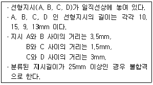

자기비파괴검사기능사 (2010-07-11 기출문제)
1과목: 자기탐상시험법
1. 굴삭기의 몸체에 칠해진 페인트 막의 품질을 비파괴시험하기 위하여 막 두께를 측정하고자 할 때 가장 적합한 검사법은?
- 자분탐상시험
- 침투탐상시험
- 방사선투과시험
- 와전류탐상시험
(정답률: 73%)

2. 비파괴검사의 종류에 따른 원리 또는 특성이 옳게 짝지어진 것은?
- 침투탐상시험 : 모세관현상
- 스트레인 측정 : 누설자속 측정
- 초음파탐상시험 : 표면균열 검출
- 방사선투과시험 : 플러그라이트 검출
(정답률: 75%)
3. 비파괴검사를 하는 이유와 직접적인 관련이 없는 것은?
- 제품을 평가하기 위하여
- 사용 중에 발생하는 결함을 찾기 위하여
- 용접 후에 발생한 결함을 찾기 위하여
- 제품 원가를 정확하게 산출하기 위하여
(정답률: 88%)
4. 침투탐상시험에 대한 설명으로 옳은 것은?
- 결함이 시험체의 표면에 열려 있을 필요는 없다.
- 세척제로 지시모양을 형성시켜서 미세한 결함까지 찾게 하는 시험법이다.
- 콘크리트나 목재 등과 같이 흡수성인 것을 제외하고 거의 모든 재료에 적용이 가능하다.
- 어두운 곳에는 적색의 염색침투액을 사용하고 관찰이 쉽게 백지에 결함의 지시모양을 확대하여 나타낸다.
(정답률: 70%)
5. 와전류탐상시험의 특징에 대한 설명으로 옳은 것은?
- 주로 표면 및 표면직하의 결함을 검출하는 시험법이다.
- 가는 선, 고온에서의 시험 등에는 부적합하다.
- 접촉법을 이용하므로 고속 자동화된 검사가 어렵다.
- 수 Hz 에서 수백 Hz 의 교류를 주로 이용하므로 잡음인자의 영향이 적다.
(정답률: 77%)
6. 1eV(electron volt)의 의미를 옳게 나타낸 것은?
- 물질파 파장의 단위
- Lorentz 힘의 크기의 단위
- 1V 전위차가 있는 전자가 받는 에너지의 단위
- 원자질량 단위로서 정지하고 있는 전자 1개의 질량
(정답률: 89%)
7. 자분탐상시험의 원형자화법에서 자화력을 암페어로 표시할 대, 선형자화법에서 자화력을 나타내는 용어는?
- 암페어
- 전압(volts)
- 웨버(weber)
- 암페어ㆍ코일 감은수
(정답률: 59%)
8. 음향방출시험에 대한 설명으로 옳은 것은?
- 검출 파형은 주로 돌발형과 연속형으로 나눈다.
- 배관시스템의 실시간 모니터링에는 적용할 수 없다.
- 초음파탐상검사보다 높은 주파수를 사용하는 것이 일반적이다.
- 탐촉자가 능동적으로 초음파를 송신하여 결함에서 반사된 수신파를 계측한다.
(정답률: 42%)
9. 표면의 열린 결함 검출에 효율이 높은 비파괴검사법은?
- 침투탐상시험법
- 방사선투과시험법
- 초음파탐상시험법
- 중성자투과시험법
(정답률: 84%)
10. 압연봉 내의 비금속 개재물이 압연방향으로 납작하고 길게 늘어진 것을 무엇이라 하는가?
- 겹침(lap)
- 파열(burst)
- 적층(lamination)
- 스트링거(stringer)
(정답률: 62%)
11. 비파괴검사 방법에 속하지 않는 것은?
- 누설검사
- 피로시험
- 스트레인 측정
- 와전류에 의한 도금두께 측정
(정답률: 75%)
12. 초음파탐상시험시 진동주파수를 변화시킬 수 있는 적절한 진동자를 사용하여 재료의 두께를 측정하는 방법은?
- 공진법
- 투과법
- 경사각법
- 자화수축법
(정답률: 73%)
13. 비파괴검사법 중 철강 제품의 표면에 생긴 미세한 균열을 검출하기에 가장 부적합한 것은?
- 방사선투과시험
- 와전류탐상시험
- 침투탐상시험
- 자분탐상시험
(정답률: 65%)
14. 빛의 밝기를 나타내는 단위는?
- 파스칼(Pa)
- 룩스(lux)
- 리터(ℓ)
- 암페어(A)
(정답률: 86%)
15. 검사체 표면의 오른손 법칙에 의한 자계가 형성되는 것을 이용한 자분탐상검사법은?
- 코일법
- 극간법
- 직각통전법
- 자속관통법
(정답률: 25%)
16. 자분탐상 검사결과에 대한 신뢰성을 높이기 위한 방법이 아닌 것은?
- 시험체에 존재하는 모든 균열을 검출할 수 있는 검사법으로 수행한다.
- 교육 및 훈련을 받은 검사원이 검사를 수행한다.
- 간단한 검사장비, 검사절차 생략 및 낮은 비용으로 검사를 수행하도록 유도한다.
- 숙련된 검사원이 검사결과로부터의 지시모양을 관찰, 판독토록 한다.
(정답률: 82%)
17. 자분탐상시험에서 극간법(요크)에 의해 유도되는 자계는?
- 선형자계
- 원형자계
- 회전자계
- 찌그러진 원형자계
(정답률: 64%)
18. 시험체의 탈자여부를 측정하는데 사용되는 기기는?
- 자석
- 자장계
- 서베이미터
- 육안관찰
(정답률: 64%)
19. 시험체가 아닌 외부의 도체를 통전함에 따라 시험체에 자계를 형성하는 자화방법은?
- 축통전법
- 프로드법
- 전류관통법
- 자속관통법
(정답률: 23%)
20. 자분탐상시험시 표면 결함 자분지시와 비교하여 일반적으로 표면직하에 있는 결함의 자분지시는 어떤 형태로 나타나는가?
- 예리한 자분지시가 나타난다.
- 자분지시가 나타나지 않는다.
- 항상 원형인 자분지시가 나타난다.
- 약간 불명확하고 희미한 자분지시가 나타난다.
(정답률: 72%)
2과목: 자기탐상관련규격
21. 길이가 10인치, 직경이 4인치인 강봉을 선형자화법으로 검사할 때의 소요 전류는 몇 A인가? (단, 코일의 권선수는 4회이다.)
- 875
- 1000
- 1250
- 4500
(정답률: 31%)
22. 자분탐상시험 중 축통전법을 사용하여 부품을 자화시킬 때 발생되는 자계는?
- 합성자계
- 와류자계
- 원형자계
- 선형자계
(정답률: 70%)
23. 강자성체에 대한 자분탐상시험시 전류관통법으로 자화할 때 자속밀도가 최대가 되는 곳은?
- 도체의 표면
- 도체의 외부
- 자화된 시험체의 외부 표면
- 자회된 시험체의 내부 표면
(정답률: 66%)
24. 프로드법에 대한 설명으로 옳은 것은?
- 자화전류 값은 전극 간격이 넓게 됨에 다라 감소시켜야 한다.
- 대형 시험체를 1회 통전으로 전체를 자화시키는 방법이다.
- 시험체의 넓은 두 점에 전극을 설정하여 전면적에 전류를 흘리는 방법이다.
- 전극에 가까울수록 자계는 강하고 양쪽 전극으로부터 멀어질수록 약하게 된다.
(정답률: 58%)
25. 길이가 10인치, 최대 지름이 2인치인 시험체에 코일을 5회 감아 코일법으로 자분탐상검사를 수행하는 경우 적합한 전류 값은? (단, L/D의 값이 4 이상인 경우이다.)
- 1000A
- 1250A
- 2500A
- 5000A
(정답률: 28%)
26. 강재 석유저장탱크의 구조(KS B 6225)에 따라 용접부에 대한 자분탐상시험을 실시할 때의 설명으로 옳은 것은?
- 자화 방법은 교류 극간법으로 한다.
- 장치로는 직류 프로드 자화장치를 사용한다.
- 검사 재료는 원칙적으로 건식 비형광자분을 사용한다.
- 특별한 경우를 제외하고는 자분의 적용은 건식법으로 한다.
(정답률: 45%)
27. 항공 우주용 자기탐상 검사방법(KS W 4041)에서 비형광자분법을 사용할 때는 백색등을 검사 영역에 설치하여야 한다. 적절한 검사를 수행하기 위해 백색등은 적어도 몇 lx 이상 이어야 하는가?
- 100
- 200
- 1500
- 2150
(정답률: 73%)
28. 철강재료의 자분탐상 시험방법 및 자분모양의 분류(KS D 0213)에 따라 자분지시가 형성되었을 때 가장 먼저 해야 할 일은?
- 의사 지시인지를 먼저 확인한다.
- 자분지시를 제거 후 다시 탐상한다.
- 합격기준에 따라 판정을 먼저 한다.
- 지시가 형성되면 바로 불합격 처리한다.
(정답률: 76%)
29. 철강재료의 자분탐상 시험방법 및 자분모양의 분류(KS D 0213)에서 일반적인 용접부를 연속법으로 탐상시험할 때 예측되는 결함의 방향에 대하여 직각인 방향의 자계강도(A/m) 범위는 얼마로 규정하고 있는가?
- 70~115
- 500~1000
- 1200~2000
- 2400~3600
(정답률: 62%)
30. 철강재료의 자분탐상 시험방법 및 자분모양의 분류(KS D 0213)에서 연속법으로 퀜칭한 기계부품을 자분탐상시험할 경우 자계의 강도(A/m)는 어떻게 규정하고 있는가?
- 12000 이상
- 5600 이상
- 2400~3600
- 1200~2000
(정답률: 42%)
31. 항공 우주용 자기탐상 검사방법(KS W 4041)에서 피복된 시험체는 결함을 검출하기 위해 피복 두께가 몇 mm를 초과하지 않도록 규정하고 있는가?
- 0.025(0.001인치)
- 0.127(0.0⑤인치)
- 0.254(0.01인치)
- 2.54(0.1인치)
(정답률: 49%)
32. 철강재료의 자분탐상 시험방법 및 자분모양의 분류(KS D 0213)에 따라 다음 조건과 같은 경우 올바른 평가는?

- 지시 A, B, C, D는 연속한 지시로 불합격이다.
- 독힙한 지시 A는 합격이고, B, C, D는 연속한 지시이므로 불합격이다.
- 지시 A와 D는 각각 독립한 지시로 합격이고, B, C는 연속한 지시로서 합격이다.
- 지시 A와 D는 각각 독립한 지시로 합격이고, B, C는 연속한 지시로서 불합격이다.
(정답률: 65%)
33. 철강재료의 자분탐상 시험방법 및 자분모양의 분류(KS D 0213)에서 시험결과 나타난 흠에 의한 자분모양을 4종류로 대별할 때 독립한 자분모양, 연속한 자분모양, 분산된 자분모양 외에 다른 한 가지는 무엇인가?
- 재질경계지시
- 의사자분모양
- 단면급변 자분모양
- 균열에 의한 자분모양
(정답률: 46%)
34. 철강재료의 자분탐상 시험방법 및 자분모양의 분류(KS D 0213)에서 자화전류의 종류에 따른 특성을 설명한 것으로 틀린 것은?
- 교류는 원칙적으로 표면 흠의 검출에 한한다.
- 충격전류르르 사용하여 자화한 경우 잔류법에 한한다.
- 교류를 사용하여 자화하는 것은 원칙적으로 잔류법에 한한다.
- 직류 및 맥류를 사용하여 자화하는 경우 잔류법을 사용할 수 있다.
(정답률: 54%)
35. 철강재료의 자분탐상 시험방법 및 자분모양의 분류(KS D 0213)에 의한 표준시험편 및 대비시험편을 사용할 때 다음 중 가장 작은 치수에 적용할 수 있는 것은?
- B형 대비시험편의 직경
- A1-7/50(원형)의 인공흠의 깊이
- C형 대비시험편의 인공흠의 깊이
- C형 대비시험편의 인공흠의 나비
(정답률: 64%)
36. 철강재료의 자분탐상 시험방법 및 자분모양의 분류(KS D 0213)에서 비형광자분탐상시험의 자분을 충분히 식별할 수 있는 관찰면의 최소 밝기(lx)는?
- 20
- 300
- 500
- 1000
(정답률: 58%)
37. 철강재료의 자분탐상 시험방법 및 자분모양의 분류(KS D 0213)에 따른 B형 대비시험편의 사용 용도가 아닌 것은?
- 장치의 성능 조사
- 자분의 성능 조사
- 검사액의 성능 조사
- 잔류자기의 성능 조사
(정답률: 39%)
38. 철강재료의 자분탐상 시험방법 및 자분모양의 분류(KS D 0213)에의 자화방법은 표시한 기호 “M"의 의미는?
- 극간법
- 축통전법
- 프로드법
- 전류관통법
(정답률: 71%)
39. 철강재료의 자분탐상 시험방법 및 자분모양의 분류(KS D 0213)에 규정한 잔류법에서 시험체가 서로 접촉했을 때 또는 다른 강자성체에 접촉했을 때에 생기는 누설자속에 의해 형성되는 부정모양의 자분모양을 무엇이라 하는가?
- 자극지시
- 자기펜 자국
- 전류지시
- 재질경계지시
(정답률: 68%)
40. 철강재료의 자분탐상 시험방법 및 자분모양의 분류(KS D 0213)에 규정한 비형광 습식법의 자분농도 범위는?
- 0.2~2 g/ℓ
- 0.02~0.2 g/ℓ
- 2~10 g/ℓ
- 10~20 g/ℓ
(정답률: 44%)
3과목: 금속재료일반 및 용접일반
41. 불특정 다수를 상대로 하는 통신서비스로 통신 사업자가 제공하는 회선을 밍차하여 정보의 축적, 가공, 변환, 처리를 통해 데이터의 부가가치를 부여한 복합적인 서비스 통신망은?
- VAN
- ISDN
- MAN
- VTN
(정답률: 33%)
42. PC 운영체제(Operating System)에 대한 설명으로 틀린 것은?
- Windows XP는 운영체제이다.
- 프로그램이 실행 가능하도록 기계어로 번역해 주는 역할을 한다.
- 하드웨어와 사용자를 연결시켜 주는 프로그램이다.
- 컴퓨터 시스템을 효율적으로 관리하는 프로그램이다.
(정답률: 36%)
43. 인터넷에서 검색 엔진으르 사용하여 정보 검색 시 효율적인 방법으로 틀린 것은?
- 검색 엔진은 한 가지만을 사용하는 것이 효율적이다.
- 검색 내용에 해당하는 주제를 파악해야 한다.
- 다양한 검색 연산자를 이용해서 정보를 검색한다.
- 검색할 정보에 적합한 검색 엔진을 선정한다.
(정답률: 50%)
44. 인터넷을 통하여 파일을 송ㆍ수신하기 위한 파일전송 프로토콜은?
- Telnet
- IP
- TCP
- FTP
(정답률: 36%)
45. 컴퓨터에 침투하여 시스템을 파괴함으로써 사용자에게 해를 끼치기 위해 만들어진 프로그램은?
- virus
- vaccine
- boot
- backup
(정답률: 64%)
46. 순금속과 합금의 금속적 특징을 설명한 것 중 틀린 것은?
- 금속적 광택을 갖는다.
- 전성 및 연성이 풍부하다.
- 빛에 대하여 투명체이다.
- 수은을 제외하면 상온에서 고체이며, 결정체이다.
(정답률: 70%)
47. 구리 합금 중에서 70%Cu + 30%Zn 로 된 합금명은?
- 켈멧
- 3:7청동
- 7:3황동
- 포금
(정답률: 64%)
48. 냉간 가공도가 증가할수록 감소하는 성질은?
- 경도
- 내력
- 인장강도
- 연신율
(정답률: 45%)
49. 다음의 자성 재료 중 연질 자성 재료에 해당되는 것은?
- 알코니
- 네오디뮴
- 퍼멀로이
- 페라이트
(정답률: 49%)
50. 다음 중 재결정 온도가 가장 낮은 금속은?
- W
- Mg
- Ni
- Pt
(정답률: 53%)
51. Al-Mg-Si계 합금은 Al에 0.5%Si, 0.43%Mg이 함유된 합금으로 담금질 후에 상온 가공에 의하여 기계적 성질이 개선되고 내식성이 우수하고 전기 전도율이 좋아 승전선에 많이 사용되는 것은?
- 알민
- 두랄루민
- 알드리
- 알클래드
(정답률: 24%)
52. 물이 기상, 액상, 고상상태로 한 점에 있을 때 자유도는 얼마인가?
- 0
- 1
- 2
- 3
(정답률: 57%)
53. 충격력에 대한 재료의 충격 저항을 시험하며 인성 또는 취성의 정도를 알아보는 시험은?
- 인장 시험
- 경도 시험
- 피로 시험
- 충격 시험
(정답률: 64%)
54. 열팽창계수가 작아 줄자나 표준자 등으로 사용되는 불변강은?
- 인바
- 초경합금
- 스텔라이트
- PH계 스테인리스강
(정답률: 79%)
55. 다음 중 마그네슘(Mg)과 알루미늄(Al)의 비중을 순서대로 나열한 것은?
- 1.74, 2.70
- 2.70, 1.74
- 8.93. 6.62
- 6.62. 8.93
(정답률: 77%)
56. 다음 중 연심입방격자의 원자수로 옳은 것은?
- 2
- 4
- 6
- 12
(정답률: 66%)
57. 다음 중 조밀육방격자에 해당되는 것은?
- Fe
- Cr
- Au
- Zn
(정답률: 50%)
58. AW 500, 정격사용률 70%인 아크 용접기로 400(A)의 전류로 용접한다면 허용사용률은 약 몇 % 인가?
- 70 %
- 90 %
- 109 %
- 125 %
(정답률: 31%)
59. 다음 중 교류(AC)아크 용접기가 아닌 것은?
- 가동철심형
- 가동코일형
- 가포화리액터형
- 정류기형
(정답률: 42%)
60. 아세틸렌이 자연 발화하는 온도범위는 몇 ℃인가?
- 9⑤℃~1000℃
- 780℃~900℃
- 5⑤℃~515℃
- 406℃~408℃
(정답률: 26%)